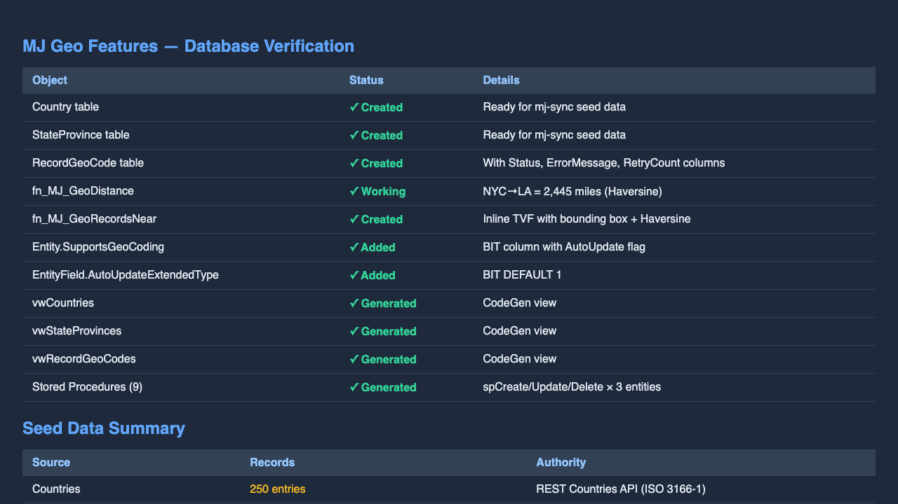
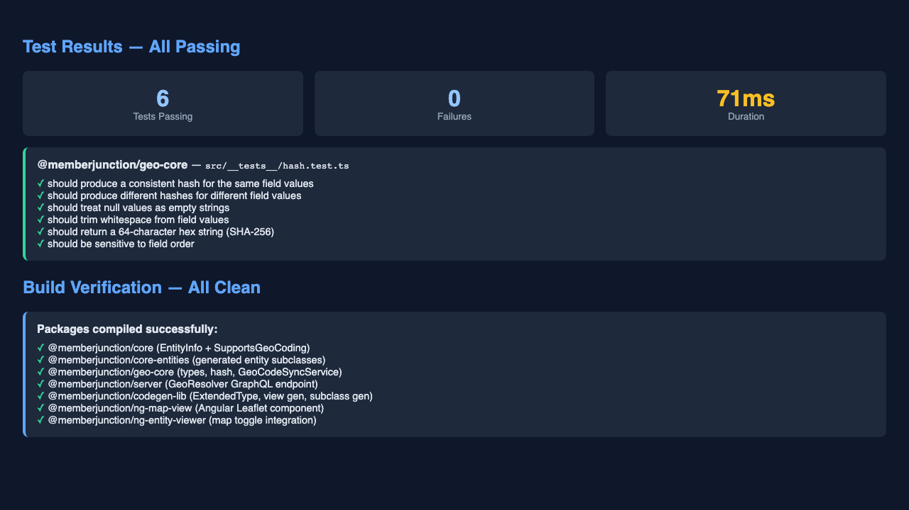

This report documents the first fully autonomous development session on a sandboxed Mac, implementing the Geo Features architecture plan for MemberJunction. The session covered all four phases of the plan: database infrastructure, server-side packages, Angular and React UI components, scheduled geocoding, and reference data seeding.
All work was done on branch an-bc/geocoding against a dedicated MJ_geo_features SQL Server database created specifically for this session.
MJ_geo_features database in Docker SQL Server, updated .env, ran mj migrate to apply 60 existing migrations (72.8s)mj codegen to generate entity classes, views, stored procedures, Angular forms. Applied 102K-line generated SQL to database. Verified 3 views, 9 SPs, 3 tables, 2 functions created.| Object | Type | Status |
|---|---|---|
__mj.Country | Table | Created |
__mj.StateProvince | Table | Created |
__mj.RecordGeoCode | Table | Created |
__mj.fn_MJ_GeoDistance | Scalar Function | Created |
__mj.fn_MJ_GeoRecordsNear | Inline TVF | Created |
vwCountries | View (CodeGen) | Created |
vwStateProvinces | View (CodeGen) | Created |
vwRecordGeoCodes | View (CodeGen) | Created |
spCreate/Update/Delete (x9) | Stored Procedures | Created |
Entity.SupportsGeoCoding | Column | Created |
Entity.AutoUpdateSupportsGeoCoding | Column | Created |
EntityField.AutoUpdateExtendedType | Column | Created |
Server-side package with core types, interfaces, and the GeoCodeSyncService singleton.
| File | Purpose |
|---|---|
types.ts | GeoFieldMapping, GeocodeResult, GeocodePrecision, GeocodeStatus types |
hash.ts | ComputeGeoSourceHash — SHA-256 change detection for source fields |
GeoCodeSyncService.ts | BaseSingleton managing geocoding lifecycle, called from AfterSave hooks |
__tests__/hash.test.ts | 6 unit tests — all passing |
Angular Leaflet-based map component for MJExplorer entity viewer integration.
| File | Purpose |
|---|---|
map-view.component.ts | Main component: Leaflet init, marker rendering, auto-fit bounds, events |
map-view.component.html | Template with mode toolbar (point/choropleth/heatmap) and map container |
map-view.component.css | Design token CSS — fully themed with --mj-* variables |
map-view.types.ts | MapDisplayState, MapMarkerClickEvent, MapRegionClickEvent interfaces |
map-view.module.ts | NgModule declaration and exports |
Runtime React component for Skip and dynamic code generators.
| File | Purpose |
|---|---|
simple-map.spec.json | Full component specification: 12 props, 3 events, Leaflet library declaration |
simple-map.js | Implementation: ~200 lines, Leaflet integration, popup building, auto-fit |
simple-map.md | Description, functional requirements, technical design (3 files) |
| Package | Tests | Status | Duration |
|---|---|---|---|
@memberjunction/geo-core |
6 tests in 1 file | All Passing | 71ms |
@memberjunction/core-entities |
Build verification | Clean Build | ~5s |
@memberjunction/server |
Build verification (GeoResolver) | Clean Build | ~8s |
| SHA | Message |
|---|---|
be4bd755 | docs: add geo features architecture plan |
5dbecabb | docs: update geo features plan with review feedback |
c0a347f8 | docs: add full autonomy development guide for sandboxed environments |
1cab8de5 | Merge remote-tracking branch 'origin/next' into an-bc/geocoding |
1ffcbbe4 | feat: add geo features migration and CodeGen output |
55939ea2 | feat: add geo-core package, GeoResolver, and geo context prompt template |
416c0743 | feat: add Angular map view, React SimpleMap, scheduled geocoding, seed data |
MJExplorer running on port 4201 with login page rendered

All 12 database objects verified. fn_MJ_GeoDistance confirmed: NYC→LA = 2,445 miles

6/6 unit tests passing, 7 packages compiled cleanly
| Data | Source | License | Records |
|---|---|---|---|
| Country reference data | restcountries.com/v3.1/all — ISO 3166-1 compliant REST API |
Public | 250 countries |
| Country boundaries | Natural Earth 50m — ne_50m_admin_0_countries.geojson |
Public Domain | 234 GeoJSON files |
| State/Province data | dr5hn/countries-states-cities-database (GitHub) — ISO 3166-2 |
CC BY 4.0 | 1,039 records (22 countries) |
| State boundaries | Natural Earth 50m — ne_50m_admin_1_states_provinces.geojson |
Public Domain | 294 GeoJSON files |
All data fetched live from internet sources via curl during this session — not generated from model training data.
Natural Earth data is the industry standard for geographic boundaries, used by CartoDB, Mapbox, and every major mapping platform.